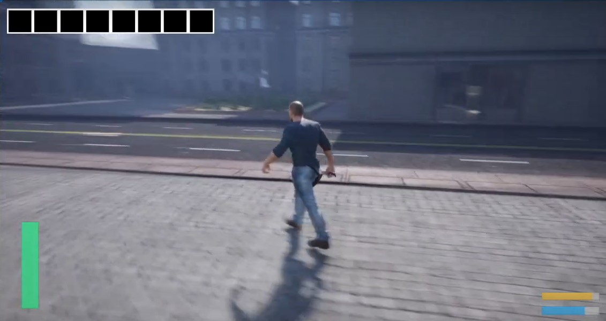

Ghost Town (Mar - May 2024)

For my final semester in my first year at Staffordshire University, I was placed in a group of my peers from the same course. This was my first proper group project. We each assigned ourselves roles and utilised Trello to assign ourselves and each other tasks. This project was quite unsuccessful as nobody took leadership of the project so we were all relying on each other to come up with individual ideas rather than having a specific goal we are all working towards.
My role in the project was to create mechanics for the player. I created movement systems including walking, sprinting and jumping while also having developed other mechanics such as melee combat and dodging. Some extra parts of the project I developed include animation management and enemies.
My Contribution
Player Character Dodging
This was my first time developing a third person character inside Unreal Engine and I found it quite easy to implement with the components that are offered. As part of the design of the game, I was told to make dodging mechanics and so I used animations from mixamo to visually represenent what I wanted to see and make the player invincible for a short amount of time while the character gets pushed in the direction it's moving in.
Combat
One of the challenges inside the game include fightin enemies and so I created the ability to deal damage with an animation and a hitbox appearing while checking what object is being hit. I designed this so that it could be applied to non enemy types of objects like trees which might need to be cut down however this part of the game was never implemented.
Enemies
After developing combat, I then created something that could fight back and so I created a character which was also animated like the player. It used Unreal Engine's Pawn Sensing component to see the player in front of it. I used Behavior Trees for the first time to manage different states of the character like when it is idle and then chasing the player.
Animation
While I didn't make the animations myself, I worked with Animation Blueprints for the first time inside Unreal Engine. These are very powerful tools working similar to a Behavior Tree by checking variables and managing states. I added the animations to the project and worked on the state machine to manage the animations successfully.